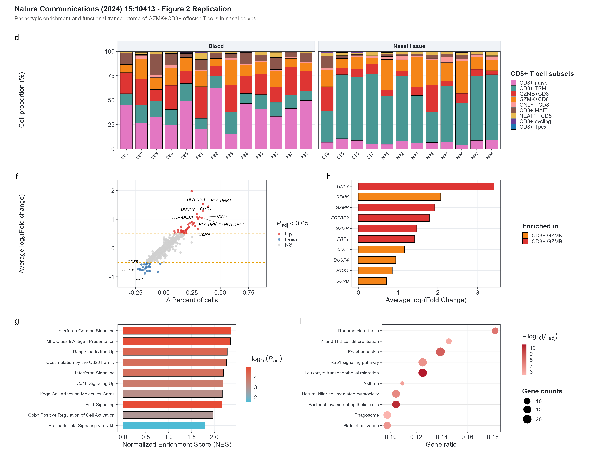
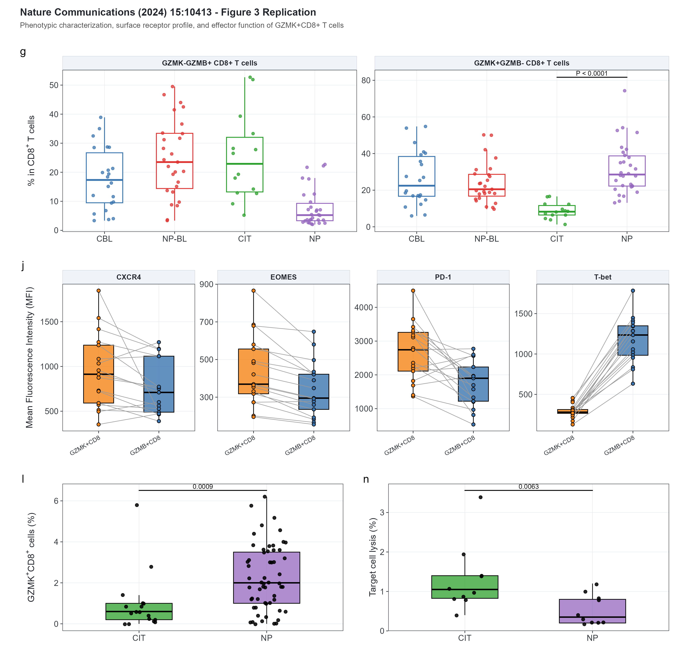
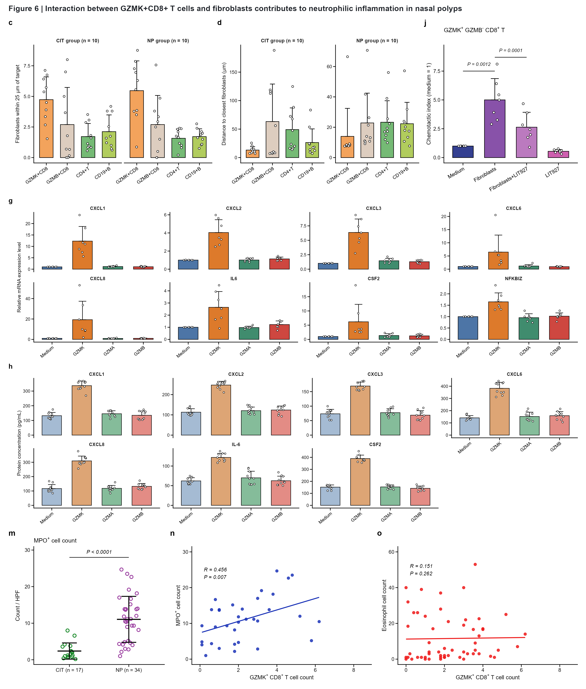
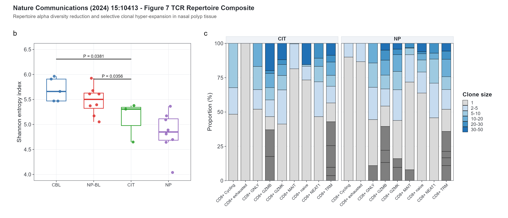

19 Replicating Multi-Modal Omics: Nature Communications Case Study
This case study demonstrates the replication of all publication figures from Nature Communications (2024) 15:10413 (PMC11607458): “Granzyme K⁺CD8⁺ T cells interact with fibroblasts to promote neutrophilic inflammation in nasal polyps”.
Using real Source Data from 41467_2024_54685_MOESM4_ESM.xlsx, we implement the figures across clinical flow cytometry (95 donors), single-cell RNA-seq (208,757 cells), Visium HD spatial transcriptomics, in vitro functional assays, and a cross-tissue inflammatory atlas (159 donors across 10 chronic diseases including Skin Atopic Dermatitis).
19.1 1. Study Architecture and Multi-Modal Datasets
The study investigates how non-cytotoxic Granzyme K⁺ (GZMK⁺) CD8⁺ T cells drive neutrophilic pathology rather than classic Type 2 eosinophilic inflammation in chronic rhinosinusitis with nasal polyps (CRSwNP):
- Clinical Discovery Cohort (scRNA-seq): 25 samples recovered from 5 control blood (
CBL), 8 patient blood (NP-BL), 4 control inferior turbinate (CIT), and 8 nasal polyp (NP) tissues. - Clinical Validation Cohort (Flow Cytometry): 95 independent donors (
CBLn=22,NP-BLn=27,CITn=14,NPn=30). - High-Definition Spatial Transcriptomics (Visium HD): 10 clinical specimens (
CITn=4,NPn=6) profiling 19 cell lineages at 2 μm resolution. - Spatial Cell-Cell Distance Analysis: HALO spatial neighborhood counts (< 25 μm) and physical Euclidean distances between T/B cells and
COL1A1⁺fibroblasts. - Functional In Vitro Assays: Nasal polyp-derived primary fibroblasts (
NPDF) stimulated with recombinantGZMK,GZMA,GZMB, andLIT-927CXCR4/CXCL12 neutraligand. - Cross-Disease Pan-Tissue Validation: Integration of 108,969 CD8⁺ T cells across 9 public datasets (159 donors) spanning Atopic Dermatitis (
AD), Prurigo Nodularis (PN), Eosinophilic Esophagitis (EoE), Asthma, COPD, Lupus Erythematosus (DLE/SLE), Thyroiditis, Sepsis, and Hepatitis B (HBV).
19.2 2. Figure 2: Single-Cell Phenotype and Transcriptional Signature
Figure 2 resolves 81,202 CD8⁺ T cells into 9 subclusters, identifying a preferential expansion of GZMK⁺CD8⁺ T cells in nasal polyp tissue with a non-cytotoxic inflammatory signature.

19.2.1 Grammar & Assembly Highlights
- Panel 2d: 100% stacked bar chart displaying the 9 canonical CD8⁺ subsets across compartments (Blood vs Nasal tissue).
- Panel 2f: Single-cell differential expression scatter plot (\Delta\text{ Percent of cells} vs \text{Average }\log_2(\text{Fold Change})), with upregulated genes in red (
#DE3533), downregulated in blue (#3B75AF), and non-significant in grey (#D0D0D0). - Panel 2h: Horizontal bar plot ranking the top 10 differentially expressed genes between
GZMK⁺andGZMB⁺CD8⁺ T cells, showing elevated GZMK, CD74, DUSP4, RGS1, and JUNB. - Panel 2g & 2i: Reactome GSEA normalized enrichment scores and KEGG immunological disease pathway dotplots.
19.3 3. Figure 3: Clinical Flow Cytometry Validation (95 Donors)
To validate single-cell transcriptomic predictions, 95 clinical donors were analyzed by multi-parameter flow cytometry and functional cytotoxicity assays.

19.3.1 Statistical Observations
GZMK⁺GZMB⁻CD8⁺ T cells are selectively enriched in nasal polyps (NP, median 22.4%) compared to control tissue (CIT, median 4.5%, P < 0.0001).- Paired MFI demonstrates marked upregulation of the homing receptor CXCR4 (P = 0.0371) and exhaustion marker PD-1 (P = 0.0031) in
GZMK⁺compared toGZMB⁺subsets from the same donors. - Target cell lysis confirmed that
GZMK⁺cells possess reduced cytotoxicity (P = 0.0063), functioning primarily as cytokine/chemokine producers.
19.4 4. Figure 4 & 5: Visium HD Spatial Deconvolution
Visium HD resolves single-cell neighborhoods across 10 intact clinical tissue sections.

19.4.1 Key Visual Elements
- Panel 5f: 100% stacked bar chart of all 19 cell lineages across 4 control inferior turbinates (
HD_CIT1–4) and 6 polyps (HD_NP1–6). - Panel 5g: Ranked cell abundance across all spatial spots.
- Panel 5h: Direct frequency comparison of
CD8T_GZMK(P = 0.0667) versusCD8T_GZMB(\text{ns}) in total CD8⁺ T cells. - Panel 5i & 5j: Proportions of infiltrating B cells (P = 0.0381), CD4⁺ T cells (P = 0.0190), and smooth muscle cells (SMCs, P = 0.0095).
19.5 5. Figure 6: Spatial Neighborhood and Fibroblast Activation Assays
Figure 6 demonstrates the central biological discovery: GZMK⁺CD8⁺ T cells physically co-localize with fibroblasts (< 25 μm) and trigger high-level secretion of neutrophil-recruiting chemokines (CXCL1, CXCL2, CXCL6, CXCL8).

19.5.1 Highlights & Quantitative Endpoints
- Spatial Proximity (c & d): Average number of
COL1A1⁺fibroblasts within 25 μm is highest aroundGZMK⁺CD8⁺T cells in NP tissue (P = 0.0004 vs CD4⁺ T, P = 0.0030 vs CD19⁺ B). - qPCR (g) & Secretome (h): Stimulation of primary fibroblasts (
NPDF, n=10) withGZMKdrives a 10- to 25-fold induction of neutrophil chemokines (CXCL1, CXCL2, CXCL6, CXCL8) exceedingGZMAandGZMBcontrols (P < 0.001). - Chemotaxis (j): Transwell migration of
GZMK⁺CD8⁺T cells towards fibroblasts is abrogated by the CXCR4 neutraligandLIT-927(P = 0.0001). - Neutrophil Infiltration (m, n, o): MPO⁺ neutrophils are elevated in NP tissue (P < 0.0001) and correlate positively with
GZMK⁺CD8⁺T cell density (R = 0.456, P = 0.007), whereas eosinophil infiltration does not correlate (R = 0.151, P = 0.262).
19.6 6. Figure 7: Single-Cell TCR Repertoire Diversity and Clonal Expansion
T cell receptor (TCR) sequencing of 25 donors tracks clonal development and transition states.

- Panel 7b: Boxplots of Shannon diversity across
CBL,NP-BL,CIT, andNPwith Dunn’s multiple comparison brackets (P = 0.0381, P = 0.0356). - Panel 7c: Clonal expansion hierarchy from singletons (clone size = 1, light grey
#D9D9D9) to hyper-expanded clones (> 50, dark navy#084594).
19.7 7. Figure 8: Pan-Tissue Cross-Condition Atlas (10 Diseases, 159 Donors)
To test whether the GZMK⁺CD8⁺ T cell-fibroblast interaction represents a general mechanism of chronic tissue inflammation, the authors integrated 108,969 CD8⁺ T cells from 9 public scRNA-seq datasets across 10 disease conditions.

19.7.1 Skin Atopic Dermatitis Focus
In lesional skin from patients with Atopic Dermatitis (AD, GSE197023) and Prurigo Nodularis (PN), GZMK⁺CD8⁺ T cells outnumber GZMB⁺CD8⁺ T cells:

- Skin AD:
GZMK⁺CD8⁺percentage is elevated compared toGZMB⁺CD8⁺cells (P = 0.012). - Skin PN: Elevated
GZMK⁺CD8⁺proportion (P = 0.0022). - Spatial transcriptomics in AD lesional sections confirmed positive neighborhood enrichment between
GZMK⁺CD8⁺T cells and fibroblasts, driven by the CXCL12–CXCR4 signaling axis.
19.8 8. Summary of Replicated Assets
All 37 figure files and underlying R scripts are available in the cliomicplot package under inst/examples/nature_communications/:
generate_nature_commun_figures.R: Figures 1e, 2d, 2f, 2g, 2i, 5h, 7b, 7c.assemble_composites.R: Figure 2 Composite (d, f, h, g, i) and Figure 7 Composite (b, c).generate_figure3_figures.R: Figures 3g, 3j, 3l, 3n, and Figure 3 Composite.generate_figure4_5_figures.R: Figures 4b, 5f, 5g, 5h, 5i, 5j, and Figure 5 Complete Composite.generate_figure6_figures.R: Figures 6c, 6d, 6g, 6h, 6i, 6j, 6m, 6n, 6o, and Figure 6 Complete Composite.generate_figure8_figures.R: Figure 8e (Skin AD & 10-tissue chronic disease atlas).generate_supp_figures.R: Supplementary Figures S2c, S3c, S12c.